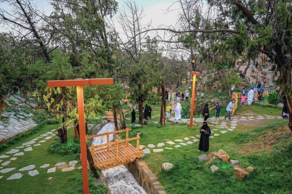
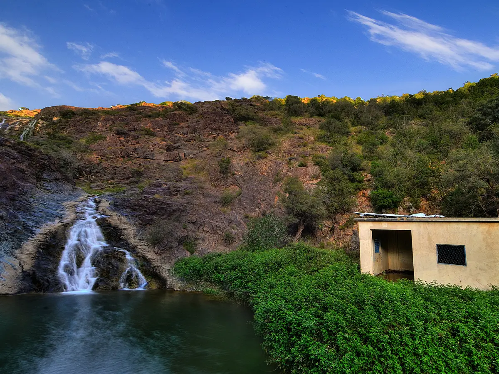
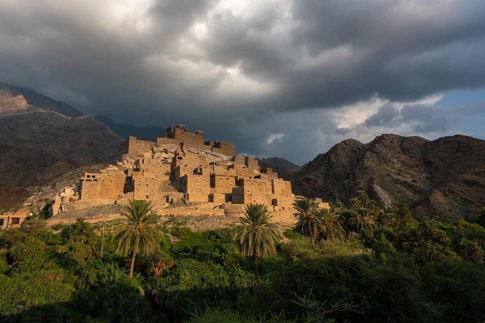
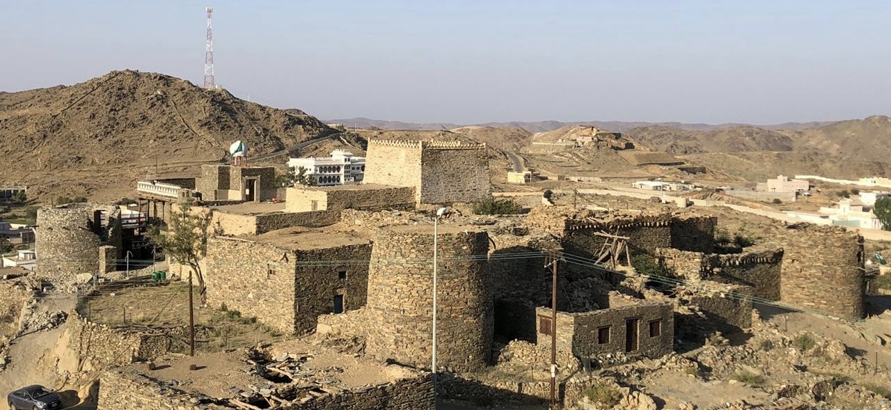

Landmarks in Al-Baha
Raghadan Forest
Raghadan Forest is one of the most distinctive natural landmarks of Al-Baha and the southern region of Saudi Arabia, known for its dense trees and lush greenery. The forest enjoys a moderate climate throughout the summer and overlooks the Tihama region and King Fahd Road in Al-Baha. A notable feature of the forest is the fog that climbs the high Sarawat Mountains, particularly during the early morning hours and late afternoon, continuing into the night. This creates a climate that ranges from mild to cool and rainy during the summer. What enhances the beauty of this forest, besides its high altitude, are the numerous scenic viewpoints offering breathtaking views of the deep valleys of Tihama, into which King Fahd Road descends—serving as a vital artery connecting the highlands with the coastal lowlands. The dense vegetation adds another dimension to the forest’s charm, featuring juniper and acacia trees, along with smaller shrubs that provide shade during the day and a gentle breeze at night.
Khairah Forest
Khairah Forest includes Prince Mishari Park, which features the renowned Khairah Waterfall, also known as Jadr Waterfalls. The waterfall extends from the high Sarawat Mountains down to Bir Al-Qalt, an area equipped with around 45 shaded seating areas, 15 seating spots, 3 children’s play areas, and restroom facilities, along with various other services. The forest is characterized by numerous agricultural terraces that help retain significant water reserves after rainfall. These terraces contribute to the water supply of Khairah Waterfall (Bir Al-Qalt), ensuring a continuous flow for an extended period. The waterfall is located below the village and cascades from a great height, forming one of the largest waterfalls in Saudi Arabia.
Dhi Ayn Village
Dhi Ayn Village is an ancient heritage village located in Tihama, west of Al-Baha. It was established in the 10th century AH and is over 400 years old. The village is built atop a white mountain and is famous for cultivating bananas, lemons, peppers, basil, and kadi flowers, as well as for its traditional handicrafts. The village features numerous houses, ranging from two to four stories, a small mosque, and several fortresses that were used for defense and surveillance purposes.
Bakhrosh Fortress
The Fortress of Commander Bakhrosh is a historic fortress named after the warrior Bakhrosh bin Alas Al-Zahrani, one of the prominent knights of the First Saudi State in the year 1218 AH. It is located in the Al-Baha region. The fortress was built in the village of Al-Hassan in Al-Qura Governorate, where fierce battles took place between Commander Bakhrosh bin Alas Al-Zahrani and the Ottoman forces. Strategically constructed atop a mountain, the fortress is surrounded by steep slopes on three sides, leaving one side open for surveillance purposes. The fortress consists of five circular towers, interconnected by solid stone structures designed to enhance defense capabilities and withstand Ottoman artillery attacks.